|
EMPORIOM
|
|||||
Muralla del sector meridional
(s. II a.e.c). El sistema defensivo del sector meridional de la Neápolis
experimentó diversas reformas a través del tiempo. Se conservan aún restos
arquitectónicos pertenecientes a las diferentes fases constructivas.
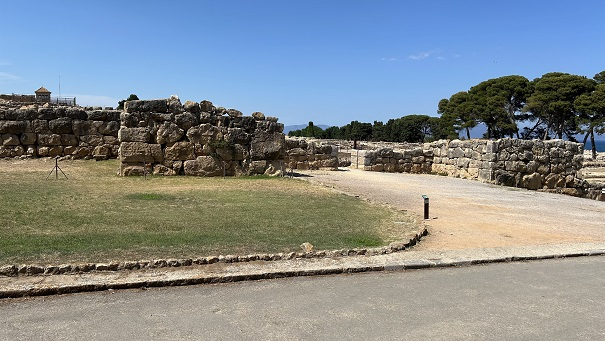
Asklepíeion
(s. II a.e.c). Centro terapéutico y religioso consagrado al dios griego de
la medicina Asklepios. Este santuario incluía un área religiosa con un
edificio destinado a la curación de los enfermos (abaton).
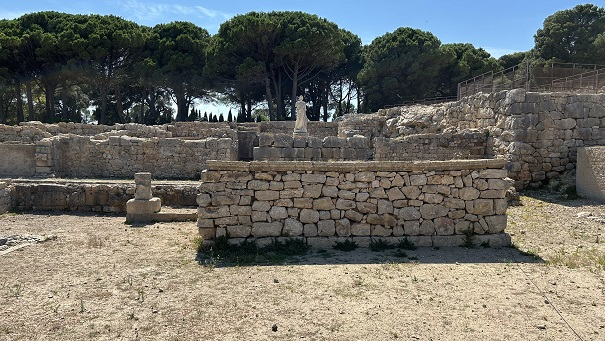
Serapíeion
(s. I a.e.c.). Santuario dedicado a Isis y a Serapis,
divinidades egipcias vinculadas a la medicina y la salud. Fue construido en el
siglo I a.e.c por Noumas un personaje originario de Alejandría que
posiblemente fuera un comerciante que negociaba en Emporion. El santuario
está formado por un gran recinto porticado de forma rectangular. En el extremo
occidental se ubicaba un templo tetrástilo, de estilo dórico y con escaleras
laterales (aún visibles), que alojaba las estatuas de las divinidades.
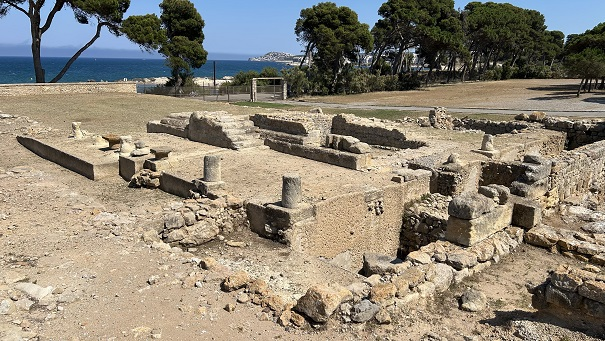
Continuamos con nuestra visita hacia la Factoría de Salazones y la Casa del Peristilo.
Fábrica de salazones (s. I). Pequeña industria de salazones con diversas dependencias destinadas a la elaboración de conservas y salsas de pescado. El edificio está formado por un patio central donde se efectuaban los trabajos de despiece y manipulación del pescado, una serie de depósitos de diferentes tamaños revestidos de mortero hidráulico (opus signinum), donde se producía la maceración de las conservas, y un almacén en forma de L. Las salsas de pescado se envasaban para su comercialización en ánforas producidas en las alfarerías de la ciudad. Esta factoría se construyó en el siglo I, cuando este sector de la Neápolis pasó a ser el barrio portuario de la ciudad romana de Emporiae.
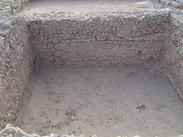 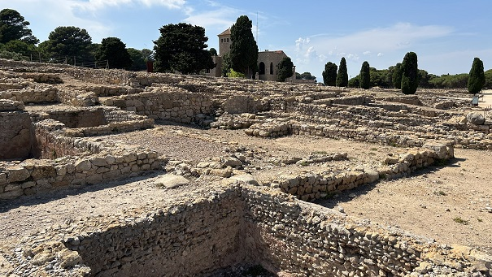
Domus del Peristilo (s. II a.e.c). Se trata de una casa de tradición arquitectónica griega. La casa se articula alrededor de un patio central descubierto, rodeado por un pórtico de columnas, que recibe el nombre de peristilo. Entorno a este patio se articulan los distintos ámbitos de la casa, con una habitación principal situada al norte. Dentro del patio se han conservado los restos de una cisterna para el almacenaje de agua, así como un pozo yuna pequeña fuente.
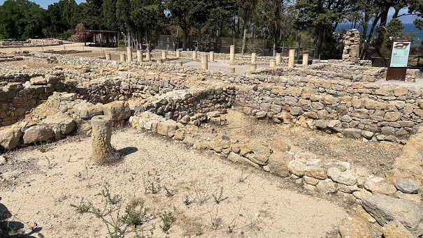
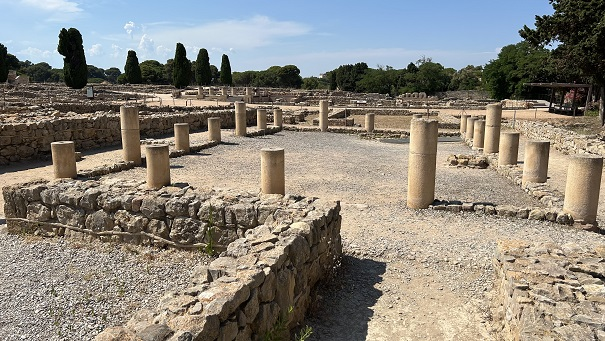
Macellum (s. II a.e.c). Se trata de un pequeño mercado ubicado junto a la calle principal de la Neápolis y muy cerca del ágora o plaza pública. El mercado formado Por diversas tiendas que abrían directamente a la calle o bien a un patio interior. En el centro de este último, había una cisterna.
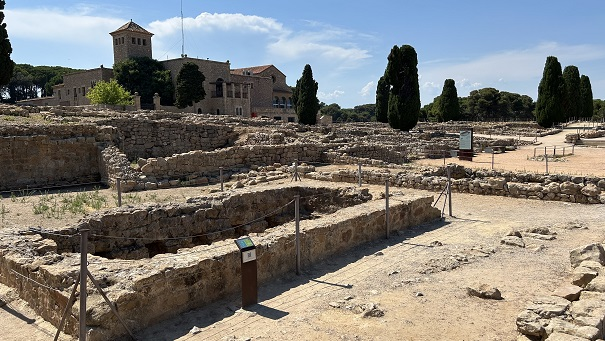
Continuamos hacia el Ágora y Stoa.
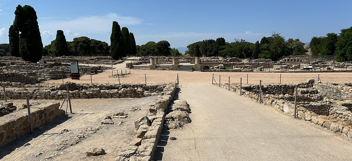
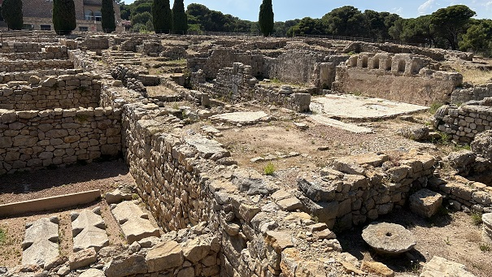
Casa del mosaico con
inscripción dedicada a Agathos Daimon. Se trata de una construcción
doméstica creada durante la importante transformación del núcleo griego que tuvo
lugar entre los siglos II y I a.e.c. continuando su uso hasta la época imperial
romana.
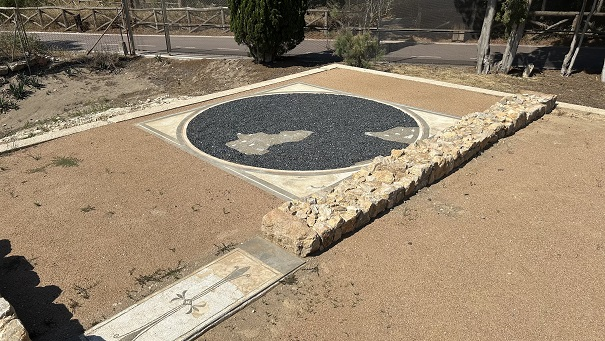
Pavimento con Inscripción Griega (s. I a.e.c.) Esta habitación, que formaba parte de una casa griega de la Neápolis, estaba destinada a la celebración de banquetes (symposia). Los banquetes tenían lugar a ultima hora del día y estaban reservados únicamente a hombres libres. En estas reuniones el propietario de la casa invitaba a sus amigos a cenar, a beber vino y a una serie de divertimientos. En la entrada de la habitación había una inscripción en griego relacionada con las actividades llevadas a cabo durante la celebración del symposion, que se ha traducido como "Dulce estar reclinado".
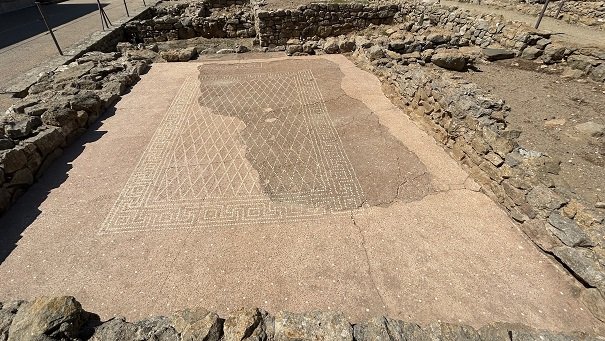 Continuamos por La Casa del Atrio. Las casas de atrio en Emporion son el reflejo de la influencia de la arquitectura itálica en las ciudades griegas de época helenística (siglos II y I a.e.c.). Se caracterizan por la existencia del atrium, un patio central descubierto que presenta un sistema de captación y almacenaje del agua de lluvia, y que a su vez permitía la ventilación e iluminación de las dependencias de las casa. Alrededor de este espacio se distribuían todas las dependencias de la casa. El atrio estaba conectado a la calle a través de un pasillo. Algunas domus podían tener dos pisos de altura.
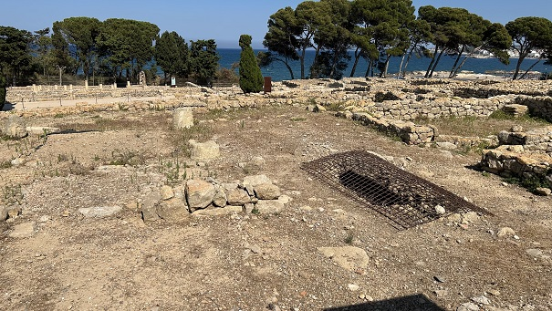
Filtros de agua (s. III a.e.c). Las ánforas tienen un orificio en la base y debían estar llenas de materiales filtrantes.
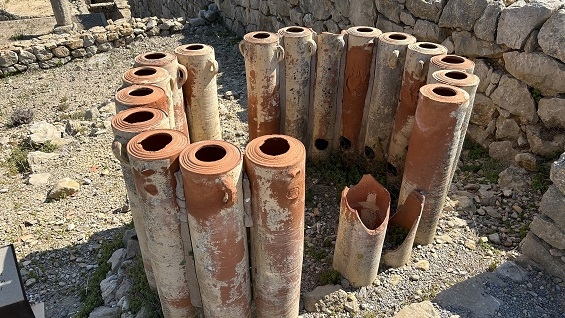
Después nos
dirigimos al Museo. Es una visita imprescindible del Yacimiento. Factoría metalúrgica (s. I a.e.c). Complejo industrial destinado a la metalurgia y Muralla que limitaba con el acceso la ciudad romana. 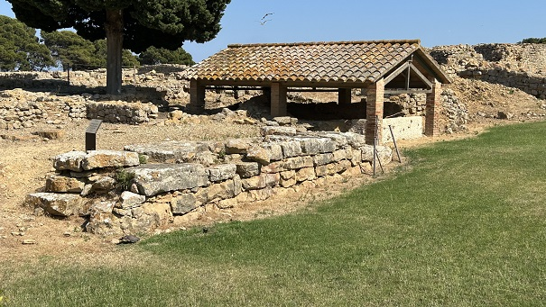
Fuera del recinto: Muelle helenístico
(s. II - I a.e.c). Construido poco después de la llegada de los romanos,
debido a la intensificación del tráfico comercial. Situado en la playa del Moll
Grec. Tiene una longitud de 80m y esta construido con doble paramento de grandes
bloques de piedra calcárea y un relleno interno de piedras y argamasa.
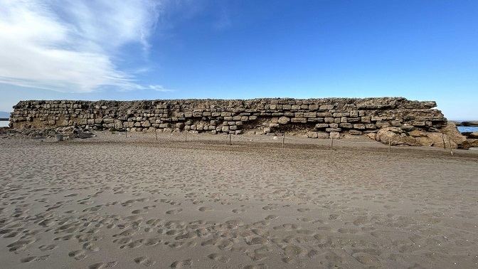 Ver Puertos romanos El temporal de marzo de 2018, descubre restos de la ciudad griega en la playa de Empúries. Los restos están en muy buen estado de conservación. Corresponderían al momento inicial de la ocupación griega, sobre la segunda mitad del siglo VI a.e.c.
|